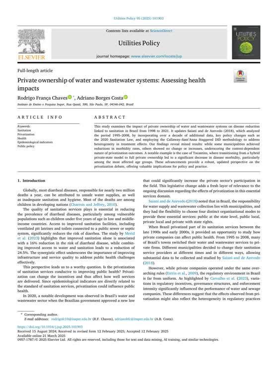
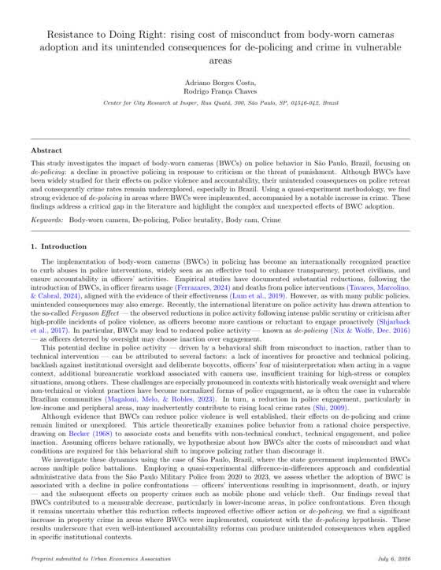

About
What I do
I'm a Master's candidate in Computational Analysis and Public Policy at the University of Chicago, where I work at the intersection of data science, economics, and public policy. I build models and pipelines that turn raw, messy data, like satellite imagery, century-old archives, and property tax records, into evidence people can actually use to make decisions.
My work spans applied machine learning (gradient-boosted models on datasets of millions of records), causal inference (difference-in-differences, regression discontinuity, panel econometrics), and geospatial analysis (remote sensing, georeferencing, spatial modeling at scale). I've applied these methods to housing markets, transit infrastructure, water systems, and policing across Brazil, Senegal, India, and the United States. I care as much about explaining the result clearly as about getting it right.
Working at the policy level means I read the rules alongside the data. I work fluently with zoning and land-use regulation, property tax assessment, and infrastructure policy, and I translate that regulatory detail into analysis that holds up to scrutiny from agencies, courts, and clients.
Most recently, I spent the summer with the World Bank's DECDI team in Washington, DC, where I used satellite imagery to measure urbanization around Dakar's new bus rapid transit corridor, reconstructed four decades of Mumbai property tax policy, and tested its assessment records for statistical signatures of manipulation. At UChicago’s Mansueto Institute, through June 2026, I built a digitization pipeline for century-old fire insurance registers and linked the extracted firms to three historical censuses, mapping the spatial evolution of Chicago’s industry. I return in September 2026 to write the method up as a research paper.
I'm also a committed cyclist, which is part of why the way cities move people, and who they're built for, is the question I keep coming back to. Native Portuguese speaker, fluent in English, conversational in Spanish.
Experience
Where I've worked
Data Science & Research Intern, DECDI (Formerly DIME)
World Bank — Washington, DC
Extracted urban development indicators from satellite imagery to measure how a dedicated Bus Rapid Transit line reshaped urbanization patterns in Dakar, Senegal. Found and corrected a building-detection threshold set at nearly double the value the source paper optimizes for Africa — a bias that varied by neighbourhood type and so would not have differenced out of the design. Separately, reconstructed four decades of Mumbai property tax policy and tested millions of assessment records for bunching at policy thresholds, alongside an analysis of how the market for additional floor area splits across regulatory instruments (TDR, Premium FSI, Fungible FSI). Findings confidential to the World Bank.
Resuming Sep 2026
Graduate Research Assistant
Mansueto Institute for Urban Innovation, UChicago
Built an end-to-end digitization pipeline — segmentation, OCR, structured extraction — for century-old cloth-bound fire insurance registers, pulling thousands of firm addresses from hundreds of pages. Linked them to three historical censuses by street and used NLP on firm names to classify establishments across hundreds of industries, producing a dataset of industrial location in 20th-century Chicago that did not previously exist.
Research Assistant, Insper Cities Lab
Arq.Futuro — São Paulo, Brazil
Two years of quasi-experimental policy evaluation across utilities, crime, property taxation, regulation, and real estate markets, on home prices, tax assessments, and disease incidence. Built panel data at whatever geography the question required — municipalities and census tracts where official boundaries existed, and new units derived through spatial clustering where they did not. First-authored the resulting Utilities Policy article and co-authored an in-progress working paper on police body cameras. Mentored undergraduates on research design and methodology.
Teaching Assistant — GIS, Econometrics & R
Taught GIS and R to 50+ students, applying spatial analysis to São Paulo’s real estate market, transit infrastructure, population density, and urban models of settlement. Advised undergraduate theses through Brazil’s required capstone; one placed second in its cohort. Coordinated an intensive field course with municipal stakeholders.
Research
Publications & working papers
Private Ownership of Water and Wastewater Systems: Assessing Health Impacts
Utilities Policy — Peer-Reviewed Journal Article (first author)
Evaluates whether Brazil’s 2020 opening of water and sanitation to private operators improved public health, applying Callaway–Sant’Anna staggered difference-in-differences to propensity-matched municipalities across 322 privatizations (1998–2021). Finds significant reductions in diarrheal morbidity among children under five, but no effect on non-diarrheal disease; results are mixed across municipalities, with the most robust evidence from Tocantins’ transfer to full private ownership. First of two authors, credited with the original draft, software, and data curation.

Read the paper →Resistance to Doing Right: Rising Cost of Misconduct from Body-Worn Camera Adoption
Working Paper — In Progress (second author)
Estimates how body-worn cameras changed police behavior in São Paulo, using confidential Military Police microdata (2020–2023) and the staggered rollout of 10,125 cameras across 64 battalions. Because battalion boundaries are never publicly released, I reconstructed them by clustering geocoded incidents into Voronoi polygons. Confrontations fell, with the decline concentrated in low-income areas and no significant effect in high-income ones, while property crime rose — most robustly for vehicle theft. The pattern indicates de-policing rather than a shift toward procedurally correct enforcement.

Read the draft on SSRN →Work
Selected projects
NYC Property Tax: A Horizontal-Equity Audit
Python · LightGBM · scikit-learn
Do comparable New York properties carry comparable tax burdens? Rather than measure against a citywide average, the audit benchmarks every property against its own peer group — borough, building class, tax class, year built, size and value band — with a five-level fallback so rare building types still get a label. On that definition roughly 43% sit outside 15% of their peer-group median, though the peer definition and the threshold are both ours, so it measures dispersion within comparable groups rather than proven misassessment. I designed the peer-group labelling, built the data pipeline, and trained the models; two collaborators contributed.
Data Centers Next Door
R · Shiny · Spatial Econometrics
How does data centre buildout relate to what it costs to live nearby? The project links 45 confirmed Chicago-area facilities — curated from 124 scraped listings, then geocoded — to ZIP-level Zillow home values and ACS household and utility costs, comparing neighbourhood costs before and after each facility's first air permit as a composite index. Descriptive by design: it maps associations rather than claiming an effect. On a four-person team I did the scraping, geocoding and the Shiny dashboard.
Skills
Toolkit
Methods
Causal Inference (DiD, RDD, IV, Staggered DiD), Panel Econometrics, Machine Learning, Spatial Analysis, Remote Sensing
Programming
Python, R, SQL
Tools
QGIS, ArcGIS, Git, LaTeX, PostgreSQL, Excel
Policy & Regulation
Zoning and land-use, property tax and valuation, housing and infrastructure policy, regulatory and compliance analysis
Building with
Gradient boosting, large-scale data pipelines, geospatial workflows, OCR & archival data extraction, interactive dashboards
Languages
Portuguese (Native), English (Fluent), Spanish (Conversational), German (Basic)